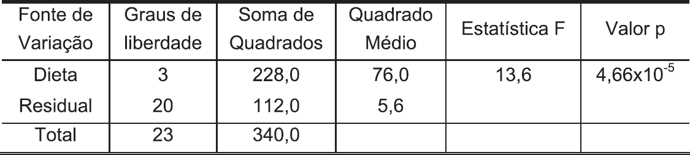
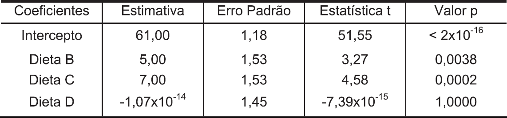

Um hematologista quer verificar se a dieta tem influência no tempo de coagulação do sangue
(em segundos) de uma espécie de animal. Para isso, 24 animais foram divididos aleatoriamente
em quatro grupos, que receberam diferentes dietas, denotadas por A, B, C e D. Verificadas as
condições necessárias para o uso da técnica de Análise de Variância, sua aplicação originou as
tabelas.
Tabela de Análise de Variância

Tabela com resultados de estimação e teste de hipóteses

Com base nesses resultados, o hematologista conclui que
-
a diferença observada entre os tempos médios de coagulação é estatisticamente significante para
pelo menos duas dietas.
-
a estimativa do desvio-padrão do tempo de coagulação para uma dada dieta é maior do que 3
segundos.
-
a proporção da variação total nos tempos de coagulação, que é explicada pela variação na dieta, é
menor do que 0,50.
-
o tempo médio de coagulação da dieta A é estatisticamente diferente dos tempos médios de
coagulação das demais dietas.
-
o tempo médio de coagulação das dietas B e C é igual a 5 e 7 segundos, respectivamente.